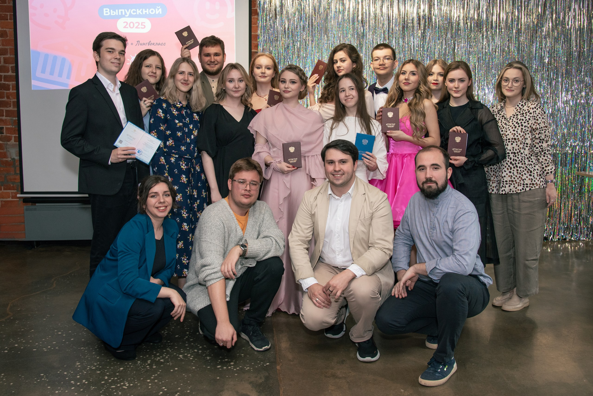

Гордеева Женя


Привет! Меня зовут Женя, и я лингвистка! Люблю исследовать неизведанные языки, решать логические задачки, играть в шляпу и фразеологического крокодила! А это моя личная страничка!


Основная информация обо мне
Я жила и выросла в старинном и чудеснейшем городе России — в Рязани. я проучилась там 9 лет в школе №72, а потом поступила в Научный лингвистический класс АПО в Москве и до конца школьных лет училась очно-заочно: раз в какое-то время мы с одноклассниками выезжали на очные недели в Москву и жили в общежитии (так что переезд в общежитие ВШЭ нас совсем не пугал!) Здорово, что некоторые мои одноклассники даже стали моими одногруппниками :)